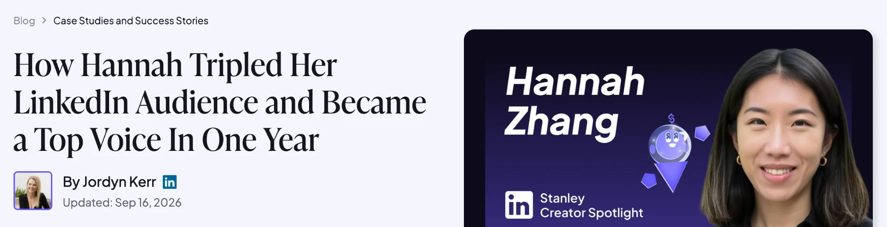

Your essentials
Building your AI content machine
- Your content strategy, saved in Stanley
- 5 creators to study
- A week of LinkedIn posts drafted in your voice
Step 1 before the session. Steps 2 and 3 before or after: each one feeds the next.
Win a spot in the next Superhuman Accelerator
Post on LinkedIn about building your content system, tag Ella Molony Cook, Stanley and Wispr Flow, then paste your post link below. Winner drawn .
Step 1 Before the session Set up Stanley and your content home
Stanley is your AI head of content: a voice note goes in, drafts in your voice come out, you approve, it posts. Free for 1 month with code STANLEY1MONTH.
Come to the session with Stanley and Wispr Flow set up and connected.

-
Hold fn, speak, let go. Your words appear wherever your cursor is. Mac without fn: Ctrl + Opt. Windows: Ctrl + Win.
How to redeem
- Install Wispr Flow on your laptop through wisprflow.ai.
- Open it and go to Settings → Plans and Billing.
- Scroll to the very bottom and click the promo link.
- Enter TIMERICH90 for 3 months Pro.
Wispr Flow setup guideGood to know
The code only works in the desktop app, and does nothing if you already pay for Wispr.
No laptop? Use the free phone app for now and add the code on your laptop later.
-
- Go to Stanley and click Log in.
- Click Sign up, then Sign up with email or Google.
- Enter your email and a password, then click Continue.
- Enter the code Stanley emails you, then choose No, I’m new to Stanley.
- Pick a plan and click Start your 14-day free trial.
- At checkout, click Add promotion code, enter STANLEY1MONTH and click Apply.
- Add a payment method and click Start trial. You can connect iMessage, WhatsApp or Telegram later.
Already on Stanley’s free plan?
Log in, click Upgrade, then follow steps 5 to 7.
-
Watch the video
- In Stanley, open the left sidebar and click Connectors.
- Click Wispr Flow, sign in, and click Allow access. Do this one first. Talking out loud is how Stanley learns your voice.
- Connect iMessage, WhatsApp or Telegram, so you can send Stanley ideas on the go.
- Connect LinkedIn and anywhere else you post, so Stanley learns from your posts and can post for you.

Tap to open it full size. -
Copy your Stanley MCP link
Watch the video
- In Stanley, open the left sidebar and click Connectors.
- Scroll to Stanley MCP and copy the link.
In Claude
- Click your name (bottom left), then Settings.
- Click Customize, then the Connectors tab.
- Click + Add (top right), then Add custom connector.
- Name: Stanley. MCP server URL: paste your link. Click Continue.
- Sign in to Stanley when asked and click Allow.
- In a chat, click + (bottom left), then Connectors, and switch Stanley on.
On the free Claude plan you can add one custom connector.
In ChatGPT (Plus or higher)
- Click your profile, then Settings.
- Open Apps & Connectors, scroll to Advanced settings and turn on Developer mode.
- Back in Apps & Connectors, click Create.
- Name it Stanley, paste your link as the Connector URL, choose OAuth and click Create.
- Sign in to Stanley and allow access.
Your content home. Stanley holds your strategy, drafts and calendar. Want the Notion Content Hub too? It comes with the Time Rich Club.
Step 2 Before or after the session Build your content strategy
Tell AI who you are and who you serve, and it turns that into your content strategy in about 10 minutes.
This one’s an interview, about 10 minutes, and we don’t do it on the call. Get ahead before the session, or finish it after.
-
Open a new chat, paste the prompt, then answer out loud with Wispr Flow. Messy is great.
What to say- Who you are, and what your company does.
- What you want most from your content right now: customers, investors, hires or partners.
- What you've done that most people haven't: the results, the numbers, the companies you've built.
- What people always ask you about.
- Who your ideal customer is.
- What you could talk about for an hour, for free.
- A story from the last 2 weeks: a win, a mistake, or a customer conversation that stuck with you.
Prompt · Content strategySave the worksheet as a Google Doc. -
Stay in the same chat, so the AI has your worksheet. Paste the prompt and answer out loud with Wispr Flow. In about 5 minutes you’ll know what kind of creator you are and who to learn from.
Prompt · Creators to study -
Watch the video
- In Stanley, click your profile, then Brain.
- Strategy: paste the content strategy you just built.
- My Human: paste a short overview of who you are. Quick way: ask the same AI chat “Put together everything you know about me that would help someone write my content”, then paste the answer.
- Instructions: add your must-follow rules, one per line, e.g. “Use contractions: don’t, not do not.”
- Topics and Creators: paste the creators list from the last step.
Stanley keeps adding to your Brain as you talk to it. You can edit anything, anytime.

Tap to open it full size.
Step 3 After the session Run your content machine
One hour of talking. 20 to 50 pieces of content.

-
- Copy the skill below.
- In Stanley, go to Brain, then Skills. Click + and name it linkedin-content.
- Paste the skill in and save it.
Skill · linkedin-contentCreate LinkedIn Content Help the user turn a topic into a short LinkedIn post in approximately 10 minutes. Use relevant context files and available connectors to understand their content strategy, audience, voice, and existing content. Keep the workflow conversational and concise. Do not write the full post until the user has selected an angle and hook, unless they explicitly ask to skip ahead. 1. Read context and get the topic Find and read the relevant content strategy file first. Follow its references to audience and voice guidance where available. Review three to five relevant past posts. Prefer examples with performance data or explicit user approval. Learn from their openings, specificity, rhythm, and storytelling without copying them. Distinguish measured performance from editorial judgment. Never describe a post as high-performing without evidence. Use the topic or notes the user provided. Ask for a topic only if none was supplied. If a context source is unavailable, acknowledge the gap briefly and proceed with accessible material. Ask only for information necessary to continue; do not let research consume the session. 2. Run a short interview Budget approximately three minutes for context gathering and the interview combined. Ask up to three questions together, covering what is still missing: - Who is this for, and what should they think, feel, or do afterward? - What is the main takeaway or opinion? - What story, example, observation, or result supports it? Adapt the questions to the topic. Invite rough bullets or conversational answers. Do not repeat questions already answered in the user's notes or context. Use at most one brief follow-up round with one or two questions to uncover specifics or clarify the claim. Examples: - What happened that made you realize this? - What was different from what you expected? - Can you give one concrete example? - Is that something you observed or your interpretation? - What would be overstating your point? Do not force a personal story, framework, lesson, or dramatic turning point. An opinion, observation, announcement, or useful explanation can stand on its own. Stop when there is enough substance. Reflect the core point in one sentence before presenting angles. Clearly label proposed interpretations; do not add a separate confirmation round. 3. Present five angles and flows Budget approximately two minutes, including the user's choice. Offer five genuinely different approaches. Vary the central argument, reader payoff, or narrative approach, rather than rephrasing the same idea. For each option, provide: - A short name and the point the reader takes away. - A one-line flow: opening → development or evidence → ending. Keep each option to two short lines. Use available material and identify any missing evidence instead of inventing it. Recommend one angle with a one-sentence reason. Wait for the user to choose, combine, or revise an angle. 4. Present five hooks and recommend length Budget approximately two minutes, including the user's choice. Write five distinct hooks for the selected angle, each one or two short lines. Use effective patterns from the user's existing content where available. Adapt the pattern to the topic without copying old wording or claiming unsupported performance. Each hook should: - Make the topic relevant to the intended audience. - Introduce a specific situation, tension, observation, or promise. - Give a clear reason to keep reading. - Create curiosity the body will satisfy. - Match the user's voice. Avoid vague cliffhangers, fabricated numbers, fake controversy, unsupported claims, and recycled “nobody talks about this” openings. Recommend one hook with a brief reason. In the same message, suggest the shortest suitable length: - 80–120 words for a compact observation or opinion. - 120–180 words by default. - 180–250 words when the story or explanation needs room. These are editorial guidelines, not performance guarantees. If the user selects only a hook, use the recommended length. Wait for the user's hook selection before drafting. 5. Draft and remove AI-writing patterns Budget approximately three minutes for drafting, editing, and scoring combined. Use the selected angle, flow, hook, and length. Keep one main point. Deliver the hook's promise with concrete support and minimal setup. Apply the following principles while writing, then silently edit the draft before showing it: - Preserve the user's vocabulary, opinions, humor, uncertainty, and natural rhythm. - Use plain words, concrete details, and direct verbs. - Cut generic introductions, filler, corporate language, and inflated importance. - Avoid stock phrases such as “delve,” “game changer,” “in today's world,” and “it's worth noting.” - Avoid formulaic contrasts such as “It's not about X. It's about Y.” - Cut fake-insight setups such as “Here's what nobody tells you.” - Avoid forced groups of three, identical paragraph shapes, excessive em dashes, and stacked dramatic fragments. - Let evidence demonstrate the point rather than declaring it important or surprising. - Keep useful nuance, honest uncertainty, and distinctive sentences. - Cut fake-profound endings and unnecessary recaps. - Never invent experiences, dialogue, emotions, results, or facts to make writing feel human. Treat these as editing principles, not a mechanical blacklist. Preserve natural expression and accurate meaning. Use plain text and natural paragraph breaks suitable for LinkedIn. Include lists only when helpful. Follow known preferences for emojis and hashtags; otherwise omit them. Do not require a named framework, “TAKEAWAY:” label, personal tagline, or CTA. End naturally. Include a question or CTA only when it serves the post. 6. Score and deliver Evaluate the draft for the intended audience: **Shareability: 1–5** Would this reader send it to someone or share it publicly because it is useful, relatable, or expresses something they care about? **Curiosity: 1–5** Does the opening create a specific reason to continue, and does the body reward that interest? Use this scale: - 1: Weak. - 2: Needs substantial work. - 3: Solid but ordinary. - 4: Strong. - 5: Exceptional for this audience. Scores are editorial judgments, not predictions of reach. Do not inflate them. If either score is 3 or lower, make one focused revision before presenting the draft. If improvement requires missing facts, identify the gap instead of inventing them. Avoid repeated revision loops. Return: 1. The finished post, ready to copy. 2. Word count and intended audience. 3. Shareability score with one short reason. 4. Curiosity score with one short reason. Keep the assessment brief and outside the post. Working rules - Target a 10-minute session, including user replies, without promising an exact duration. - Keep explanations short and batch questions. - If time runs short, reduce optional follow-ups and commentary. Do not silently select an angle or hook. - Respect requests to skip, combine, or revisit stages. - Preserve the chosen direction during revisions unless the user requests a change. - Never publish or schedule without explicit user instruction.

Tap to open it full size. 
“Before, I would just use Claude for drafts. But what I’ve found with Stanley is that it’s much more optimized for LinkedIn. Its deep knowledge of your past LinkedIn performance is what differentiates it from any other tool I’ve used.”
Hannah Zhang (@itshannahzhang), who tripled her LinkedIn audience and became a Top Voice in one year -
Send Stanley this, then answer its questions with Wispr Flow. One post at a time, until your week is drafted.
Say this to StanleyUse my linkedin-content skill. Draft post 1 from "Your first week of posts" in my content strategy. When we finish, move to post 2.
Stuck for a story?
Be discovered: a frustration your clients share, or why you waited so long to share your work.
Be trusted: a how-to, or a lesson from a client conversation.
Be chosen: a client result, or what working with you looks like.
-
Record one voice memo or call with the Wispr Flow Notetaker (with everyone’s OK). Then send Stanley:
Say this to StanleyHere's my voice memo: [paste the transcript]. Using my content strategy, turn it into 3 LinkedIn posts, 1 carousel and 1 reel script, in my voice. Keep my words. Add nothing that isn't in the memo.
-
Watch the video
- In Stanley, open the left sidebar and click Rituals.
- Scroll through and read what each one does. For example, the Evening report sums up what you posted, how your posts are doing and who engaged.
- Switch one on.
- Want your own? Click to add a new ritual and describe it in plain words, with a day and time. For example: “Every morning, ask me 3 personal questions to get my content ideas flowing.”
You can change or turn off any ritual from the Rituals page.
-
Watch the video
- Open any draft in Stanley.
- Ask: “Turn this into 3 posts for X and 1 reel script for Instagram, and put them in my drafts.”
- Check them, click Mark as ready, and schedule.
Ask for more (e.g. 10 posts) and one post becomes a week of content.
Bonus: Stanley video guides, 5 short videos
- Connectors: connect Wispr Flow and your tools
- MCP connector: plug Stanley into Claude or ChatGPT
- Keep the brain updated: every edit teaches it your voice
- Custom rituals: tasks it runs on repeat
- Post across platforms: one idea, every platform
Meet Ella
Ella Molony Cook has spent almost a decade building businesses, and now she’s helping other founders & leaders figure out how to build their delegation system. After exiting her first company in 2021, Ella went on to build a global private capital network & Founder AI Lab before founding Time Rich.
Join the Time Rich Club
Time Rich Club is for founders, leaders and investors who refuse to choose between ambition and a life they love. Members get mentorship to build a life of impact: become visible, build authority, and build the delegation system that gives them their time back. Real wealth isn’t only financial. It’s a deeper relationship with yourself and your mission, and the freedom to spend your time how you choose.
- Private content, resources & pep talks
- Every free Time Rich workshop added to your calendar automatically, so you never miss a live session
- All replays of free sessions + partnership perks
- Monthly drop of the Time Rich & Growth Strategies
- LIVE fireside chats with TRC mentors
- Time Rich Club comms in Slack with TRC mentors
- Notion Superhuman OS
- Join the next Superhuman Accelerator (Feb)
Join our WhatsApp communities for the next events, wins and intros.